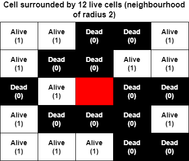

Warning: This website contains content that may flash at high frequencies. If you or someone viewing this with you is sensitive to this type of content, please use discretion when choosing frame-rates.
Cellular automata are a generalisation of John Conway’s Game of Life. Cells existing in a grid each have a state. Observing only the states of the cells immediately around it, each cell updates its value based on a given rule. The same rule is applied to all cells in the grid.
Different forms of cellular automata arise by changing the rule format, resulting in drastically different (and complex) behaviours. We’ve implemented some famous examples here.
Using a neural network and more complex states, the cells can be trained to exhibit specific behaviours, and this when it becomes Neural Cellular Automata (NCA). Our project is interested in investigating how we can leverage NCA to make CAs that exhibit organism-like behaviour.
Cell: Cellular automata exist on a grid of cells. Each square of the grid represents is termed a cell, and each cell has its own value representing its state.
Neighbourhood: These are the cells immediately surrounding the target cell that this cell can ‘see’ and use the values from in its decision making. What is included in the neighbourhood can vary from CA to CA (see Larger than Life) however in most models this is usually the cells that are ‘touching’ the cell.
Update cycle: This is when we go through an update all the values of all the cells based on their previous values.
Update rule: This is the rule/decision making process that each cell uses to determine its new value in the next update cycle. Every cell in the grid uses the same rule.
Neural Cellular Automata (NCA) are a category of cellular automata that involves using a neural network as the cell’s update rule. The neural network can be trained to figure out how to update the cell’s value in co-ordination with other cells operating on the same rule to produce a target behaviour.
One of the best examples of NCA is Growing Neural Cellular Automata (A. Mordvintsev et. al, 2020) where they trained a Neural Cellular Automata to ‘grow’ into a target image from a single seed cell. (Highly recommend looking at the paper, they have an interactive version of the result that’s really cool!).
Neural Cellular Automata is displays properties that can be likened to how cells communicate and co-ordinate within living organisms. The model from Growing Neural Cellular Automata also naturally showed regenerative properties, i.e. when the pattern was disturbed during development, so long as the disturbance was not too drastic, the model was able to recover.
This is probably the most famous example of cellular automata there is.
The Game of Life operates on these very simple rules:
Even this simple rule can produce some very complex and interesting behaviours, and many patterns have been discovered that are self-sustaining. A more sophisticated version of the Game of Life can be found here.
Life like CA operate very similarly to the Game of Life in that all cells are either alive or dead. However, Life Like gives you the freedom to choose how many cells must be alive in the neighbourhood to either survive or be born. This is specified by a rule string.
The rule string format we have used is survival/birth notation. In this notation, the original Game of Life would be expressed as 23/3 (we don’t worry about spacing between numbers because they can only be the numbers 0-8), where 2 or 3 cells in the neighbourhood are required for survival of a living cell, and 3 cells in the neighbourhood are required for a dead cell to come to life/be born.
Larger than Life builds on Life Like CA by introducing even more flexibility. This means the following are now specifieable in the rule string:

The neighbourhood of each cell consists of the cells in contact with it.
Neighbourhood of a target cell in Larger than Life when the neighbourhood radius is set to 2 cells

Different neighbourhood shapes/different ways of determining a cell's distance from the target cell
Continuous CA also builds on Life Like CA. Continuous CA can display behaviours similar to basic organisms and population level behaviours of bacteria etc. that have simple behavioural patterns. The main difference is that instead of using the binary dead or alive as states, we use a continuous range of values. The new cell state value is calculated in the following way: